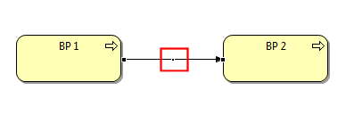
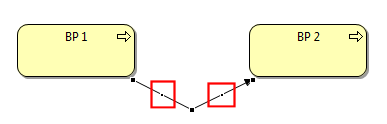

A connection line (relationship) can have any number of bend-points so that the connection can be routed to form bends and deviations in the diagram.
To add a bend-point to a connection firstly select the connection. A bend-point "handle", or dot, will appear in the middle of the connection:

A connection bend-point "handle"
Drag the bend-point handle in the desired direction. Notice that as you drag the handle two new bend-point handles are added to the connection:

Connection bend-point "handles" appear
You can continue to select and drag these handles to create new bend-points. As each new bend-point is created, two new handles will appear either side of the selected handle.
To delete a bend-point, select the bend-point's handle and drag it so that the connection line becomes straight. Once the connection line is straightened the bend-point will disappear.
Note - bend-points cannot be added to connections if the Connection Router Type for the View is set to "Manhattan". See here for more details.